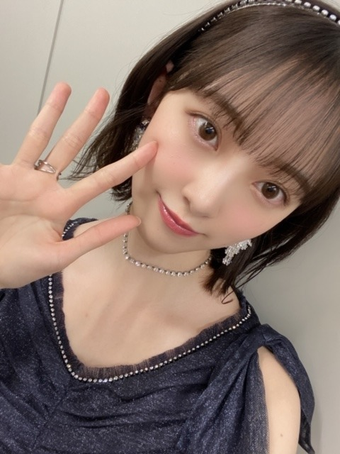
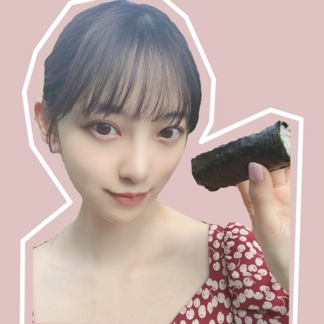
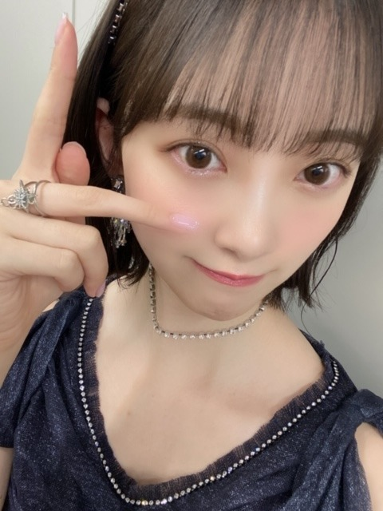

2020/0720Monドレスコードはわたしも知らない
はんばんこ！
今日も暑かったね〜
いつも敬語でブログを書いてるので
たまにはタメ口で書いてみます

久しぶりに夜明けの衣装を着たよ〜
夜明けがくるぅ〜
クレヨンしんちゃんのひまわりと同じで
キラキラとしたアクセサリーに目がないから
いつもキラキラのアクセサリーを
みるとテンションがあがる！

恵方巻きっぽく
手巻き寿司を食べてみた^ - ^
これはHer lip toの
チェリー柄ドレスで、お気に入り！
シルエットが綺麗なワンピースってすてき^ - ^
小嶋さんに会いたいなぁ
ぷーちゃん

マネキンポーズ
昨日は寝る前に
ネオン・デーモン っていうダークホラーの
映画を観たんやけど
エル・ファニングさんが好きで見たら
色々な恐怖と美しさと残酷さがつまった作品で
寝る前に見たせいか、
ばっちり悪夢見ちゃって...>_<...
ひー
みなさんも寝る前に見る作品には
お気をつけて...>_<...
あ、パネル展の感想みとるよ♡
ありがとう♡ね
ばいちゃ
2020/07/20 19:54
コメント(287)
未央奈さん、こんばんは
夜明けの衣装、素敵ですね
キラキラアクセサリーと
よく合ってます
チェリー柄ドレスも涼しげで
夏らしい～
自分は暑すぎないこの時期に
サマーセーターを着たりします
未央奈さんは、サマーセーター
着るのかなぁ
手巻き寿司の具、気になる～
ぷーちゃんって呼んでるんですね
可愛い(^_^)
またコメントします
夜明けの衣装、素敵ですね
キラキラアクセサリーと
よく合ってます
チェリー柄ドレスも涼しげで
夏らしい～
自分は暑すぎないこの時期に
サマーセーターを着たりします
未央奈さんは、サマーセーター
着るのかなぁ
手巻き寿司の具、気になる～
ぷーちゃんって呼んでるんですね
可愛い(^_^)
またコメントします
タメ口って、岐阜弁やね。
全然違和感ないわ(笑)
俺もバリバリ岐阜弁やで。
しかし、未央奈ちゃん、本当に綺麗になったね❤️
もう、大人の女性だよね。
木曜のシブヤノオト、楽しみにしとるで❗
全然違和感ないわ(笑)
俺もバリバリ岐阜弁やで。
しかし、未央奈ちゃん、本当に綺麗になったね❤️
もう、大人の女性だよね。
木曜のシブヤノオト、楽しみにしとるで❗
ちょうどテスト週間だから癒せれます！
テスト週間じゃなくても癒せれます！
ホラー映画で見た方がいい映画てありますか？
これからも応援してます！無理はしないでください！
テスト週間じゃなくても癒せれます！
ホラー映画で見た方がいい映画てありますか？
これからも応援してます！無理はしないでください！
暑い日が続きますね。身体に気をつけて下さい
こんばんは。ブログ更新ありがとうございます。
私は引きこもりなので、普段あまり人と話す機会が少ないので、敬語を忘れないよう、コメントを書く時は、できるだけ丁寧な言葉を使うようにしていますが、熱中した時はタメ語になる時があります。
私の場合、寝る時はテレビの音をイヤホンで聞きながら眠りに入ります。昔から静かな環境より、音が鳴っている方が眠くなりやすいです。テレビはオフタイマーをセットします。
ではまた。
私は引きこもりなので、普段あまり人と話す機会が少ないので、敬語を忘れないよう、コメントを書く時は、できるだけ丁寧な言葉を使うようにしていますが、熱中した時はタメ語になる時があります。
私の場合、寝る時はテレビの音をイヤホンで聞きながら眠りに入ります。昔から静かな環境より、音が鳴っている方が眠くなりやすいです。テレビはオフタイマーをセットします。
ではまた。
ブログ更新ありがとうございます
最後にパネル展の感想見てくださってると
書いてくださってありがとうございます
本当に未央奈さんは細かいところまで
気を使ってらっしゃって
ブログ更新の頻度が高く
755も毎日の様にファンの
皆様とやり取りしていらっしゃって
本当に尊敬してます
自分が言えることではないですが
こういった姿が未央奈さんの後輩にあたる
掛橋沙耶香ちゃんや、林瑠奈ちゃんなどに
憧れられる内の1つの理由ではないかと
思ってます
これからも、アイドル業にモデル業、
女優業と未央奈さんが幅広く
ご活躍されることを願っております
年齢を重ねられても
相変わらずホラー映画が好きでいらっしゃると
言うことで、長く持っている趣味が
あると言うのはすごく憧れます
自分ももう少しで
成人を迎えますが、
未央奈さんのように
趣味と仕事を両立出来たらと思います
チェリー柄ドレスも本当にお似合いでしたし、
プティ君も可愛かったです
今度の音楽番組も楽しみにしてますね
写真集本当に良くて、
何回も見返させて頂いております
未央奈さんはどの髪型でもお似合いですが
また生でボブの未央奈さんを
見れる日を楽しみにしてます
梅雨が開けると同時に
この暗い世界の闇も開けてほしいです
最後にパネル展の感想見てくださってると
書いてくださってありがとうございます
本当に未央奈さんは細かいところまで
気を使ってらっしゃって
ブログ更新の頻度が高く
755も毎日の様にファンの
皆様とやり取りしていらっしゃって
本当に尊敬してます
自分が言えることではないですが
こういった姿が未央奈さんの後輩にあたる
掛橋沙耶香ちゃんや、林瑠奈ちゃんなどに
憧れられる内の1つの理由ではないかと
思ってます
これからも、アイドル業にモデル業、
女優業と未央奈さんが幅広く
ご活躍されることを願っております
年齢を重ねられても
相変わらずホラー映画が好きでいらっしゃると
言うことで、長く持っている趣味が
あると言うのはすごく憧れます
自分ももう少しで
成人を迎えますが、
未央奈さんのように
趣味と仕事を両立出来たらと思います
チェリー柄ドレスも本当にお似合いでしたし、
プティ君も可愛かったです
今度の音楽番組も楽しみにしてますね
写真集本当に良くて、
何回も見返させて頂いております
未央奈さんはどの髪型でもお似合いですが
また生でボブの未央奈さんを
見れる日を楽しみにしてます
梅雨が開けると同時に
この暗い世界の闇も開けてほしいです
未央奈ブログ更新ありがとう！
猫じゃらし！
今日も暑かったね。タメ口すごく良いよ。
この衣装綺麗だよね。カチューシャも可愛い。
手巻き寿司良いねえ。未央奈は食べ物が似合うよね。チェリー柄ドレス似合ってて可愛い。
プティくんが大きく見えてちょっと面白いね。
未央奈はホラー好きだねー。
僕は今日FLASHダイアモンドを買いに行ったら売ってなかったよ。残念。
では！
猫じゃらし！
今日も暑かったね。タメ口すごく良いよ。
この衣装綺麗だよね。カチューシャも可愛い。
手巻き寿司良いねえ。未央奈は食べ物が似合うよね。チェリー柄ドレス似合ってて可愛い。
プティくんが大きく見えてちょっと面白いね。
未央奈はホラー好きだねー。
僕は今日FLASHダイアモンドを買いに行ったら売ってなかったよ。残念。
では！
タメ口ブログめっちゃいいこれからもタメ口がいい、、 
いつかの待ち合わせ場所と君らしさ見比べるとほんとに大人っぽくキレイになっててますます惚れた！！
けどたまには昔の幼い未央奈もまた見てみたいからいろんなメイク投稿が見てみたい！！コロナには気をつけてね
いつかの待ち合わせ場所と君らしさ見比べるとほんとに大人っぽくキレイになっててますます惚れた！！
けどたまには昔の幼い未央奈もまた見てみたいからいろんなメイク投稿が見てみたい！！コロナには気をつけてね
めっちゃ好きなんやけど！！
ドレス似合っていて綺麗\(//∇//)\
お肌も少し見えてセクシーだ〜(((o(*ﾟ▽ﾟ*)o)))♡
堀ちゃんの黒髪姿がまた可愛い
お肌も少し見えてセクシーだ〜(((o(*ﾟ▽ﾟ*)o)))♡
堀ちゃんの黒髪姿がまた可愛い
未央奈ちゃんブログ更新ありがとう！
タメ口ブログいいなあ☺︎いつもより距離が近い感じがする。
未央奈ちゃんのつくるコラージュ画像好き！前にもあげてくれたよね、ブルーとピンクの画像！あれお気に入りでよくみてるよ〜今日のもめっちゃかわいい！
最近暑いからホラーみて涼んでね（笑）
タメ口ブログいいなあ☺︎いつもより距離が近い感じがする。
未央奈ちゃんのつくるコラージュ画像好き！前にもあげてくれたよね、ブルーとピンクの画像！あれお気に入りでよくみてるよ〜今日のもめっちゃかわいい！
最近暑いからホラーみて涼んでね（笑）
パネル展会場遠くていけないけど写真集は毎日見てるよ！早く握手会で会いたい！
Rad好きなんですか！！！？？？？！！！
堀ちゃんブログ更新ありがとう
堀ちゃんがタメ口なのがホントにホントに
珍しくて新鮮さがありました〜
夜明けの衣装カッコイイです！！
チェリー柄のドレスはかわいくて
色んな服を着てる堀ちゃんをみたいです
日に日に暑くなってきているので
コロナにも気をつけつつ
体調管理頑張りましょう！
次のブログ更新も楽しみにしてます
ばいちゃ
堀ちゃんがタメ口なのがホントにホントに
珍しくて新鮮さがありました〜
夜明けの衣装カッコイイです！！
チェリー柄のドレスはかわいくて
色んな服を着てる堀ちゃんをみたいです
日に日に暑くなってきているので
コロナにも気をつけつつ
体調管理頑張りましょう！
次のブログ更新も楽しみにしてます
ばいちゃ
タメ語のブログめっちゃいい
これからも未央奈が楽ならタメ語でブログ更新してほしい
これからも未央奈が楽ならタメ語でブログ更新してほしい
パネル展行ってきたよ〜。
堀ちゃんのコメント付き写真パネル
写真におさめました!
可愛かった。ありがとうございます!
僕が今生きてるのは堀ちゃんのおかげです。
生きてく力をありがとうございます!
これからも応援します!
これからの堀ちゃんが幸多い事を願ってます!
ではまたコメントおじゃまします。
堀ちゃんのコメント付き写真パネル
写真におさめました!
可愛かった。ありがとうございます!
僕が今生きてるのは堀ちゃんのおかげです。
生きてく力をありがとうございます!
これからも応援します!
これからの堀ちゃんが幸多い事を願ってます!
ではまたコメントおじゃまします。
未央奈ブログ更新ありがとう！
夜明けの衣装いいよね！
カッコよさ色っぽさが混じってる感じが好き！
インスタも更新ありがとう！
これからも応援してるよ！
体調には気をつけてね！
夜明けの衣装いいよね！
カッコよさ色っぽさが混じってる感じが好き！
インスタも更新ありがとう！
これからも応援してるよ！
体調には気をつけてね！
未央奈さん、ブログ更新ありがとう。どこにでもいるおっさんです。
今の髪形めっちゃ好き。メイクも好き。
正直、歌声から未央奈さんに惹かれた自分だけど、最近では、ビジュアルも最強に。
でも、バレッタの頃もかわいいんだよな～。
結局、未央奈最強ってことか。
マジで、ライブに行きたい。未央奈の歌声が聴きたい。コールしたい。
新型コロナ。充分、気をつけて。
ばいちゃ
ひでき
今の髪形めっちゃ好き。メイクも好き。
正直、歌声から未央奈さんに惹かれた自分だけど、最近では、ビジュアルも最強に。
でも、バレッタの頃もかわいいんだよな～。
結局、未央奈最強ってことか。
マジで、ライブに行きたい。未央奈の歌声が聴きたい。コールしたい。
新型コロナ。充分、気をつけて。
ばいちゃ
ひでき
ブログありがとう！音楽の日見たよ！ハーフツイン可愛すぎて、録画してあったテレビを何度も何度も見てる（笑）感情を込めて歌っているのが本当にわかるから、見てる方も聞き入ってしまったぐらい、良いパフォーマンスだったよ！握手会でタメ口で話してくれるのめちゃ嬉しい！！私は結構緊張して敬語になっちゃうからなぁ笑 そういえばスペイベ当たったよ！！！似顔絵会とお茶会！来年は就活だから、ヲタ活あんまりできなくなっちゃうと思って、願掛けで応募したら当たったからめっちゃ嬉しかったなぁ。あと、755で未央奈ちゃんがそれを引用してくれたのも、めちゃ、めちゃ、嬉しかった！！笑笑 どんなに辛いことがあっても、未央奈ちゃんのブログとかモバメとか見てると元気が出るから、就活の時も、陰ながらずっと応援しています！
そういえば今日パネル展2回目行ってきたよ！！いつ見てもほんとかわええなぁって1人で喜んでました笑 ホラー映画、予告編見ただけで鳥肌だったわ！寝る前に見ると結構夢に出てくるよね笑 いい夢見れますように！
ももんが
そういえば今日パネル展2回目行ってきたよ！！いつ見てもほんとかわええなぁって1人で喜んでました笑 ホラー映画、予告編見ただけで鳥肌だったわ！寝る前に見ると結構夢に出てくるよね笑 いい夢見れますように！
ももんが
未央奈更新ありがとう〜！！
タメ口未央奈も親近感あってなんか嬉しいなー
大好き
からのめちゃ大好き
タメ口未央奈も親近感あってなんか嬉しいなー
大好き
からのめちゃ大好き
未央奈ちゃんはタメ口でも全然良い！
今日は良い夢見れるといいね♪
今日は良い夢見れるといいね♪
ブログ更新ありがとうございます！！
一昨日パネル展行かせていただきました！！
色んな表情の未央奈ちゃんが見れて可愛かった！
こんな時に元気いっぱいもらいました！
ありがとうございます！
感謝
感謝
一昨日パネル展行かせていただきました！！
色んな表情の未央奈ちゃんが見れて可愛かった！
こんな時に元気いっぱいもらいました！
ありがとうございます！
感謝
感謝
みおちゃんブログ更新ありがとう！！
映画悪夢って怖いね・・・
お洋服カワイ！！分かるキラキラしてるもの見ると楽しくなるよね…
パネル展は行けないけど、写真集は買ったよ！みおちゃんの魅力が沢山詰まってて買ってよかった！って思える！これから暑くなるけど熱中症には気をつけてね！！
映画悪夢って怖いね・・・
お洋服カワイ！！分かるキラキラしてるもの見ると楽しくなるよね…
パネル展は行けないけど、写真集は買ったよ！みおちゃんの魅力が沢山詰まってて買ってよかった！って思える！これから暑くなるけど熱中症には気をつけてね！！
輝きのあるお写真ですね☆
おつかれやで！
パネル展最高やったで！
パネル展最高やったで！
未央奈ちゃんブログ更新ありがとう
タメ口のブログも距離感が高い感じがして良き良き！
「音楽の日」ちゃんと観たよ〜
ハーフツインの髪型が可愛かった
裸足でSummerを久しぶりにテレビで観ることができて嬉しかった。時間差ダンス、めっちゃ好きなんです！！
755で映画を観てると言っていましたが、僕は海外サッカーをDAZNさんで観てます。海外の試合は日本時間だと夜中なので、リアルタイムでは観れないのですが後から観てます。
・未央奈ちゃんの興味があるスポーツは何ですか？
なにかしらの形で教えて頂けたら嬉しいです
大好きです！！
タメ口のブログも距離感が高い感じがして良き良き！
「音楽の日」ちゃんと観たよ〜
ハーフツインの髪型が可愛かった
裸足でSummerを久しぶりにテレビで観ることができて嬉しかった。時間差ダンス、めっちゃ好きなんです！！
755で映画を観てると言っていましたが、僕は海外サッカーをDAZNさんで観てます。海外の試合は日本時間だと夜中なので、リアルタイムでは観れないのですが後から観てます。
・未央奈ちゃんの興味があるスポーツは何ですか？
なにかしらの形で教えて頂けたら嬉しいです
大好きです！！
今日もブログ更新ありがとう！
今日も可愛いです
この一言だけでもじゅうぶんかもです。
寝る前にエグい映画とかは良くないかもですね
この前寝る前にヘビーな戦争映画見たら寝れなくなりました。
これからもタメ口でいいよ
〜しとる
自分の長野でも使うよ。（笑）
明後日パネル展行くよ！！
では
今日も可愛いです
この一言だけでもじゅうぶんかもです。
寝る前にエグい映画とかは良くないかもですね
この前寝る前にヘビーな戦争映画見たら寝れなくなりました。
これからもタメ口でいいよ
〜しとる
自分の長野でも使うよ。（笑）
明後日パネル展行くよ！！
では
未央奈お疲れ様です！
ブログ更新ありがとう！
今日めっちゃ暑かったね！
手巻き寿司いいな笑
マネキンポーズ可愛いわ笑
恐怖系の映画は苦手かも笑
これからもずっと応援してる！
がんばれー！
ブログ更新ありがとう！
今日めっちゃ暑かったね！
手巻き寿司いいな笑
マネキンポーズ可愛いわ笑
恐怖系の映画は苦手かも笑
これからもずっと応援してる！
がんばれー！
未央奈さん、今日久々に会社に行った後、渋谷のツタヤに行きました。未央奈さんがいました。このブログの写真も可愛く美しいですが、写真集の未央奈も可愛く美しい。パネルになった未央奈もです。未央奈をみると元気がでます。
FLASH増刊も買ったよ。未央奈さんは明るい夏が似合ってるね。早く天気が回復して欲しいです。
FLASH増刊も買ったよ。未央奈さんは明るい夏が似合ってるね。早く天気が回復して欲しいです。
みおな

きゃーひまわりの声が、いい
きゃー
筋トレして、シュワちゃんになるからね！！
ブログ更新ありがとう
未央奈かわいい
未央奈かわいい
ヤッホー未央奈ブログ更新ありがとー❗久々の歌番組カチューシャの未央奈探していたよ❗美しい未央奈久しぶりに見れて幸せでした❗プティ君久しぶり❗次全身のっけてくださいね～❗パネル展行って来ました。15日と19日TSUTAYA戎橋店に友達と行って来ました。２回目も新鮮でした、どれが一番良いか指差ししたら、二人共帽子の写真でした、だよな～可愛いし綺麗と意見が一致しました又写真集買ってサイン入りパネルにも、応募して来ました。全部でポストカード12枚に❗笑。後１、2回行けるかも❗でわでわ体に気配りして健康でいてください‼️おやすみなさい❗
パネル展見に行きました！ めっちゃ写真が綺麗でよかったですー
目に焼き付けたいような写真があったので居座ってしまいました。
パネル展行けてよかったです！写真集もいっぱい見直しますね^ ^
目に焼き付けたいような写真があったので居座ってしまいました。
パネル展行けてよかったです！写真集もいっぱい見直しますね^ ^
堀ちゃんはんばんこ！
タメ口ブログ、なんだか斬新です( ´ ▽ ` )笑
でも途中からはいつもの堀ちゃんのブログって感じでした(o^^o)笑
最後は「お気を付けて」ってかなり丁寧な言葉になっちゃってますし、穏やかさというか柔らかさというか、心配りが出ちゃってますよ( ´ ▽ ` )
そういうところが好きです(o^^o)♩
遅ればせながらですが、土曜の音楽の日観ましたー！
ハーフツインめっちゃ可愛かったです！(o^^o)
サンダル脱ぎ捨て隊からの堀ちゃんの大移動を見て、夏が始まったー！って気持ちになりました、風物詩です( ´ ▽ ` )♩
あの堀ちゃんのタタターッと走っていく姿めっちゃ好きなんですよね〜、きっと堀ちゃんは急いでるんで大変だと思うんですが、すみません笑
ZARDさんの負けないでも観てました、素敵でした(o^^o)♩
「どんなに離れてても心はそばにいるわ」
「離れてても心はそばに」とか、今となってはドラマや漫画でも使われるフレーズですが、始まりはこの歌詞なんですよね、名フレーズ( ´ ー ` )
歌番組、特に特別番組を見てるといろんな曲を歌いたくなりますね、ずっと口ずさんでました(^^)
世の中には素敵な曲がたくさんあるなぁと改めて( ´ ▽ ` )
ずっと楽しい時間でした(o^^o)♩
今回のブログの写真も堀ちゃんほんと可愛いです〜( ´ ▽ ` )♩
なんかぷーちゃん妙に大きく見えますけど映り方ねすよね？急成長したわけではないですよね？笑
夜明けの衣装の堀ちゃんは、普段は絶対に出会えないような神々しい可愛さですね…！
でも朗らかな笑顔でちょっと歩み寄ってくださった感も(o^^o)笑
ほんとに可愛いですね、赤い服も耳にかけた髪形もカチューシャも、全部似合ってて可愛くて、全部が堀ちゃんのためにあるかのようです(o^^o)♩
個人的な好みですが、赤い服にいつもより3割増しぐらいに惹かれてしまうので、また機会があったら見せてください！笑
ではでは、今日もブログありがとうございます、癒されて安眠できそうです(o^^o)
ばいちゃ〜( ´ ▽ ` )
タメ口ブログ、なんだか斬新です( ´ ▽ ` )笑
でも途中からはいつもの堀ちゃんのブログって感じでした(o^^o)笑
最後は「お気を付けて」ってかなり丁寧な言葉になっちゃってますし、穏やかさというか柔らかさというか、心配りが出ちゃってますよ( ´ ▽ ` )
そういうところが好きです(o^^o)♩
遅ればせながらですが、土曜の音楽の日観ましたー！
ハーフツインめっちゃ可愛かったです！(o^^o)
サンダル脱ぎ捨て隊からの堀ちゃんの大移動を見て、夏が始まったー！って気持ちになりました、風物詩です( ´ ▽ ` )♩
あの堀ちゃんのタタターッと走っていく姿めっちゃ好きなんですよね〜、きっと堀ちゃんは急いでるんで大変だと思うんですが、すみません笑
ZARDさんの負けないでも観てました、素敵でした(o^^o)♩
「どんなに離れてても心はそばにいるわ」
「離れてても心はそばに」とか、今となってはドラマや漫画でも使われるフレーズですが、始まりはこの歌詞なんですよね、名フレーズ( ´ ー ` )
歌番組、特に特別番組を見てるといろんな曲を歌いたくなりますね、ずっと口ずさんでました(^^)
世の中には素敵な曲がたくさんあるなぁと改めて( ´ ▽ ` )
ずっと楽しい時間でした(o^^o)♩
今回のブログの写真も堀ちゃんほんと可愛いです〜( ´ ▽ ` )♩
なんかぷーちゃん妙に大きく見えますけど映り方ねすよね？急成長したわけではないですよね？笑
夜明けの衣装の堀ちゃんは、普段は絶対に出会えないような神々しい可愛さですね…！
でも朗らかな笑顔でちょっと歩み寄ってくださった感も(o^^o)笑
ほんとに可愛いですね、赤い服も耳にかけた髪形もカチューシャも、全部似合ってて可愛くて、全部が堀ちゃんのためにあるかのようです(o^^o)♩
個人的な好みですが、赤い服にいつもより3割増しぐらいに惹かれてしまうので、また機会があったら見せてください！笑
ではでは、今日もブログありがとうございます、癒されて安眠できそうです(o^^o)
ばいちゃ〜( ´ ▽ ` )
ザ・ゲストの監督作品？有名監督の作品だったような・・・エルファは恋愛青春映画の彼女をデートに誘うには。がお気に入り作品です・・・。
最近はサスペンスコメディ映画のエクストリーム・ジョブとバディ映画傑作ナイスガイズに、
大興奮して大満足したところです・・・超面白い。ここのところオススメホラースリラーは、
天才的スリラー監督デ・パルマ監督作品の、
ミッドナイトクロスと、ＭＣＵスパイダーマンシリーズ監督作品のコップカーと、リブート映画デューン二部作品とブレードランナー２０４９監督作品の、プリズナーズが面白かった！！！
このあとＭＣＵ映画世界一のアベンジャーズ・エンドゲーム寝る前に見直そう・・・。
今週も体調に気をつけて頑張りましょう！？
最近はサスペンスコメディ映画のエクストリーム・ジョブとバディ映画傑作ナイスガイズに、
大興奮して大満足したところです・・・超面白い。ここのところオススメホラースリラーは、
天才的スリラー監督デ・パルマ監督作品の、
ミッドナイトクロスと、ＭＣＵスパイダーマンシリーズ監督作品のコップカーと、リブート映画デューン二部作品とブレードランナー２０４９監督作品の、プリズナーズが面白かった！！！
このあとＭＣＵ映画世界一のアベンジャーズ・エンドゲーム寝る前に見直そう・・・。
今週も体調に気をつけて頑張りましょう！？
お疲れ様〜！
本当にいつもプログ楽しみにしてます！
こんなに楽しい投稿を沢山してくれるのは堀ちゃんだけだぁ！
本当にいつもプログ楽しみにしてます！
こんなに楽しい投稿を沢山してくれるのは堀ちゃんだけだぁ！
未央奈〜！！
ブログ更新ありがとう
音楽の日良かった！！
ハーフツイン似合ってたよ
シブヤノオト楽しみ
久しぶりの神宮だね
テレビで見てるから頑張って
あとMステも楽しみ
次の更新も待ってるね〜！！
ブログ更新ありがとう
音楽の日良かった！！
ハーフツイン似合ってたよ
シブヤノオト楽しみ
久しぶりの神宮だね
テレビで見てるから頑張って
あとMステも楽しみ
次の更新も待ってるね〜！！
みおなたん、ばぶばぶ
未央奈～ こんにちは
連日のブログ更新ありがとうございます。
タメ口のブログ、面白いけど、何気に使う方言も面白いですよ。
何より手を変え、品を変え‥‥。ありがとうございます。
今日は岐阜で３５℃を超えました。そういえば、昨年「８３℃」事件が懐かしいですね。梅雨明けも間近、体調管理には特に気をつけてくださいね。「神宮」楽しみですね。
連日のブログ更新ありがとうございます。
タメ口のブログ、面白いけど、何気に使う方言も面白いですよ。
何より手を変え、品を変え‥‥。ありがとうございます。
今日は岐阜で３５℃を超えました。そういえば、昨年「８３℃」事件が懐かしいですね。梅雨明けも間近、体調管理には特に気をつけてくださいね。「神宮」楽しみですね。
未央奈ちゃんブログ更新ありがとう！
さくらちゃんとあやめちゃんとでんちゃんと同じ愛知県出身の愛知の覇王です！
蓮加ちゃんと同じ高校2年生です！
音楽の日見ましたよ！
未央奈ちゃんのカチューシャめっちゃ可愛かったし、夜明けの衣装がめっちゃ似合ってましたよ！
シブヤノオト、ミュージックステーション楽しみにしてます！
これからもずっと応援するので、頑張ってください！
さくらちゃんとあやめちゃんとでんちゃんと同じ愛知県出身の愛知の覇王です！
蓮加ちゃんと同じ高校2年生です！
音楽の日見ましたよ！
未央奈ちゃんのカチューシャめっちゃ可愛かったし、夜明けの衣装がめっちゃ似合ってましたよ！
シブヤノオト、ミュージックステーション楽しみにしてます！
これからもずっと応援するので、頑張ってください！
みおなかわゆい！
未央奈ちゃん！こんばんは！
タメ口めっちゃいいよ、これからもタメ口でお願いします^_^
パネル展見に行きましたし
写真集も買いましたー！どの未央奈ちゃんもめっちゃ可愛かったです
タメ口めっちゃいいよ、これからもタメ口でお願いします^_^
パネル展見に行きましたし
写真集も買いましたー！どの未央奈ちゃんもめっちゃ可愛かったです
未央奈、おはよう愛してる今日も可愛いね❤️
やっぱり未央奈は美しいー！
忙しいのにブログ更新ありがとー
元気もらえた！
忙しいのにブログ更新ありがとー
元気もらえた！
名古屋のパネル展行きました！
1枚1枚見るたびに「あぁ、、可愛い…」と心の声が漏れてしまうくらい本当に素敵で♡
じっくり目に焼き付けてきました！
パッセ学生時代によく来てたなんてびっくりです！
1枚1枚見るたびに「あぁ、、可愛い…」と心の声が漏れてしまうくらい本当に素敵で♡
じっくり目に焼き付けてきました！
パッセ学生時代によく来てたなんてびっくりです！
みおな
こんばんは
今日は真似して俺もタメでコメントしようと思います（実はいつも80%くらいは敬語で20%くらいがタメの割合でコメントしてます）
そろそろ寝ないとだけど、今とても暑くて眠くならないんだ
夜明けの衣装黒と白でカッコいいよね
俺はシンクロニシティのパステルブルーの衣装が1番好きかな（たしか蝶々の刺繍があったっけ？）
それといくちゃんが休んだから、辛いと思うけど寄り添ってあげてね
寝る前に見た物が夢に出てきやすいから、ホラーはダメだね
みおなの写真集を見てから寝たら、本当にみおなが夢に出てきた事があるから、夢を少しコントロールできるのかもね
パネル展は今は県外に出るのは危険と判断して行かない事に決めたけど、限定ポストカードが買えるみたいだからそれを買うね
代わりにみおなが、パネル展に行って、写真を送ってね
またコメントします
ありがとうございました
こんばんは
今日は真似して俺もタメでコメントしようと思います（実はいつも80%くらいは敬語で20%くらいがタメの割合でコメントしてます）
そろそろ寝ないとだけど、今とても暑くて眠くならないんだ
夜明けの衣装黒と白でカッコいいよね
俺はシンクロニシティのパステルブルーの衣装が1番好きかな（たしか蝶々の刺繍があったっけ？）
それといくちゃんが休んだから、辛いと思うけど寄り添ってあげてね
寝る前に見た物が夢に出てきやすいから、ホラーはダメだね
みおなの写真集を見てから寝たら、本当にみおなが夢に出てきた事があるから、夢を少しコントロールできるのかもね
パネル展は今は県外に出るのは危険と判断して行かない事に決めたけど、限定ポストカードが買えるみたいだからそれを買うね
代わりにみおなが、パネル展に行って、写真を送ってね
またコメントします
ありがとうございました
堀さん、こんばんは。
手巻き寿司撮ってたらプティくんが急に表れたみたいでカワイイですね。
ネオンデーモンは目玉がよかったことぐらいしか思い出せないのでまた見てみますね。
ブログ更新してくれてありがとう。
手巻き寿司撮ってたらプティくんが急に表れたみたいでカワイイですね。
ネオンデーモンは目玉がよかったことぐらいしか思い出せないのでまた見てみますね。
ブログ更新してくれてありがとう。
観たんやけど……笑
未央奈こちらこそ 本当にありがとう！
なんか真面目出ちゃたね！❣️
未央奈こちらこそ 本当にありがとう！
なんか真面目出ちゃたね！❣️


写真は自撮りだよね？
可愛く撮るコツを知ってるからいつも可愛い写真載せてくれるよね。
毎度のことながら元気をもらってます。
次回も楽しみにしてるよ！
★とし★